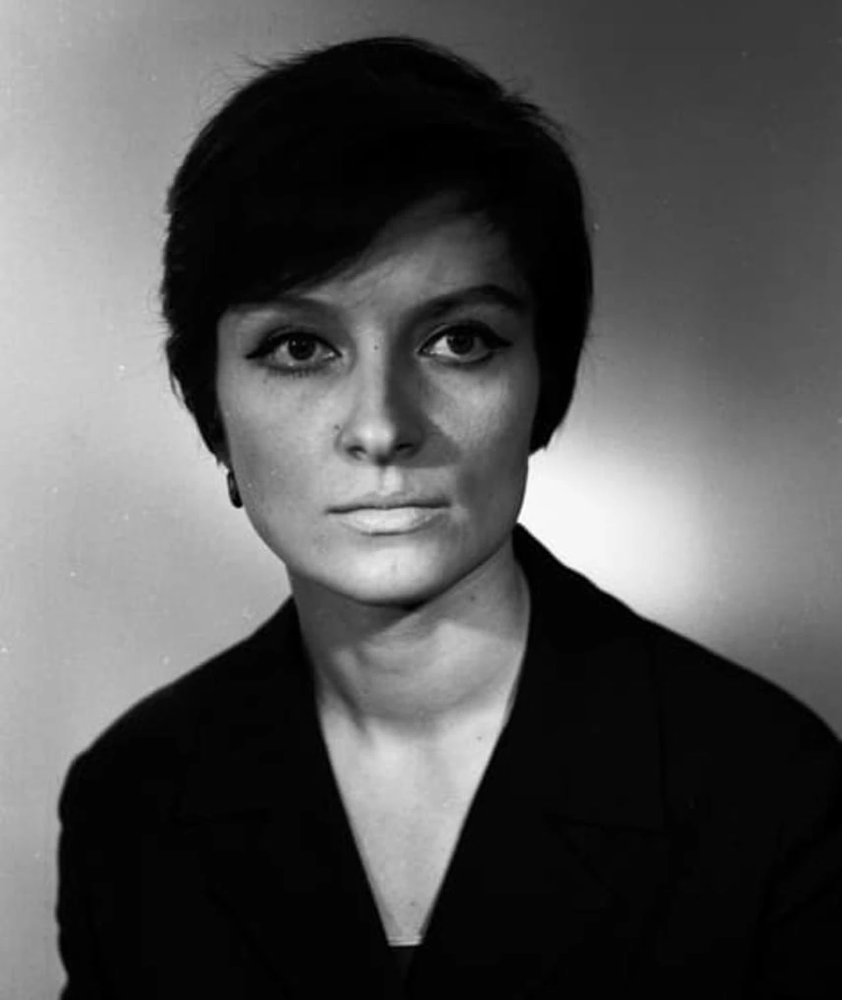

Una corriente plagada de adoctrinamiento e imposiciones ideológicas, que surge como un movimiento de propaganda y que termina trayendo a las ideas más emblemáticas del cine, la innovación en el montaje con Einsenstain, la experimentación fue clave en este movimiento unos lo veían como un choque de planos, otros como la unificación de la realidad, experimentaban y pensaban en la convergencia de cada plano para crear su discurso. Aunque dentro del mismo movimiento se considera que el cine soviético, es un cine para las masas, un cine que “educaba” a través de la historia, ha habido directoras que dentro de las imposiciones ideológicas de la época, se cuestiona la naturaleza detrás de ellas, permitiendo que lo que se trata de comunicar más que una imposición ideológica, sea algo que invite a la reflexión individual.
Esta corriente trajo nuevas propuestas para la creación de cine, revolucionando el lenguaje cinematográfico, referentes como Vsévold Pudovkin, Tarkovski, Sergei Paradjanov y Grigori Aleksandrov; se vivió una herramienta esencial para el gobierno revolucionario, era la forma en la que su discurso podía llegar a la mayor parte de las masas, Lenin en su momento decreto que el cine era el arte y la cultura para el proletariado, incluso se creo la Escuela Estatal de Arte Cinematográfico; sin embargo, el cine soviético se volvió fundamental al precio de volver al arte el negocio que mantenía el adoctrinamiento del estado, la creación de discursos perdió libertad que el arte supone tener, el cine fue llevado a un espacio en el que el pueblo se veía condicionado.
